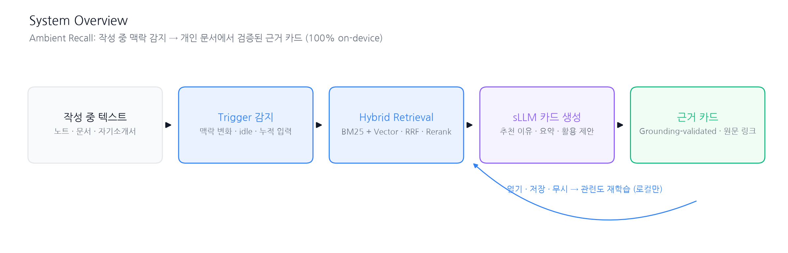
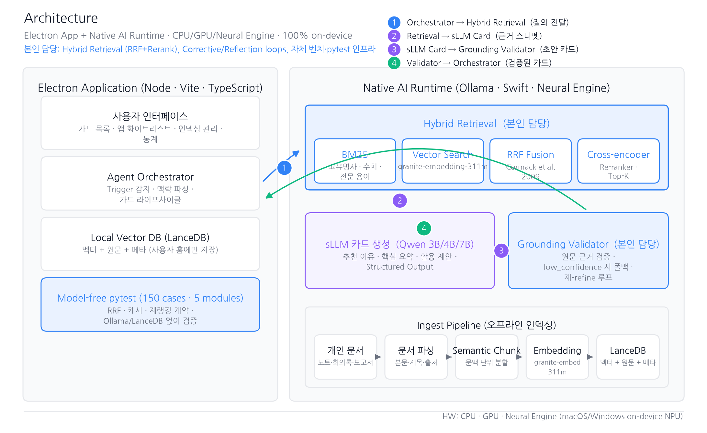
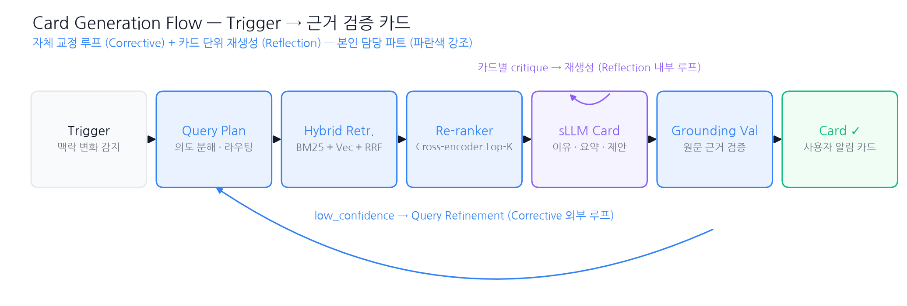
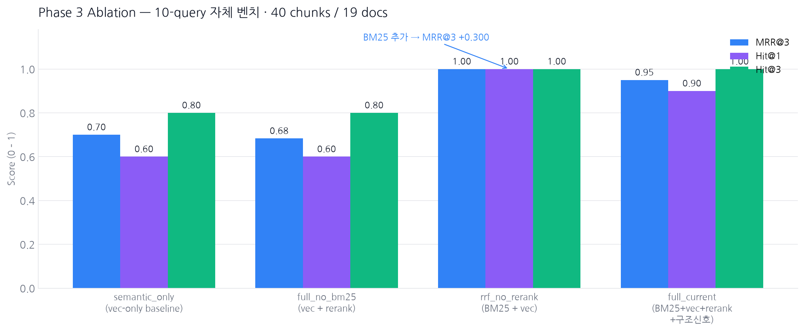

지식 노동자는 스치듯 본 자료를 다시 찾기 위해 주 5.3시간을 검색·전환에 소비하고, 그 결과 재생산에 소요되는 시간의 50% 이상이 "이미 본 것을 다시 찾는" 과정에 낭비된다 (McKinsey · IDC).
기존 검색·챗 기반 도구는 능동적으로 다시 꺼내주지 못하고, 개인 문서를 클라우드로 올려야 해 프라이버시·규제 리스크가 크다. 필요한 것은 작성 중인 맥락을 감지해서 원문 근거가 붙은 카드를 온디바이스에서 스스로 꺼내주는 에이전트다.
* 팀 내 본인 담당은 Retrieval 파이프라인 (Hybrid + Rerank + 구조신호)과 Agent 자기 교정 루프 (Corrective / Reflection / Grounding Validator)이다. Electron UI·디자인·비즈니스 파트는 별도 팀원이 담당했다.
팀 내에서 Retrieval과 추천 Agent 동작을 맡았습니다. 목표는 현재 작성 중인 문장과 비슷한 문서를 찾는 데 그치지 않고, 지금의 상황에서 다음 판단이나 행동에 도움이 될 개인 문서를 능동적으로 제안하는 것이었습니다.
전체 시스템은 Electron Application + Native AI Runtime 2-계층으로 나누어 UI 반응성과 AI 성능(CPU · GPU · Neural Engine)을 분리하고, 100% 온디바이스로 개인 문서가 기기 밖으로 나가지 않도록 설계했다. 외부 네트워크와 API를 사용하지 않는 조건은 프라이버시를 높이는 대신 외부 검색·클라우드 모델·도구 연동을 제한했다. 본인은 이 환경에서 후보 검색과 추천 Agent의 판단 흐름을 담당했다.


* SMIM 데모 영상 — 사용자가 노트를 작성하는 도중 SMIM이 스스로 관련 개인 문서를 꺼내 근거가 붙은 카드로 제안한다.
검색 후보 순위 평가: 19개 문서에서 구성한 40개 청크와 10개 질의를 사용한 자체 벤치에서, vector-only 기준 대비 Hybrid Retrieval(full_current)의 MRR@3는 0.70 → 0.95, Hit@1은 60% → 90%로 개선되었다. 다만 이 지표는 사전에 정한 관련 문서를 얼마나 상위에 배치했는지를 측정하며, 현재 상황에 실질적으로 도움이 되는 문서인지까지 평가하지는 않는다.
생성 파이프라인 평가: 26개 카드 생성 E2E에서 21개(81%)는 sLLM 카드로 생성되었고, 5개(19%)는 keyword 기반 폴백으로 처리되었다. 평균 지연은 17.3초, p95 30.5초였다. 이는 생성 실패를 무조건 오류로 끝내지 않고 대체 경로로 처리하는 동작을 확인한 결과다.
추천 품질에 대한 한계와 다음 평가: 초기 비교에서는 LLM이 맥락을 읽고 판단한 문서가 항상 BM25·Vector 유사도 검색보다 더 적합하지는 않았다. 그러나 실제 개인 문서와 맥락 표본이 적어 우열을 확정할 수 없었다. 후속 평가는 동일한 작성 맥락에 대해 BM25, Vector, Hybrid, LLM 추천 결과를 익명화해 제시하고, 평가자가 맥락 관련성·실제 유용성·새로운 정보 제공·원문 근거성을 각각 평정하도록 설계할 수 있다. 현재의 MRR@3·Hit@1은 후보 검색 성능의 근거로 한정하고, 추천 유용성의 성과로 해석하지 않는다.
